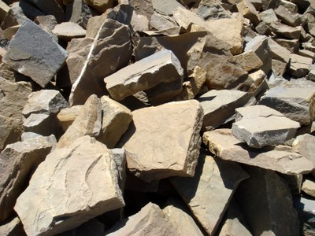
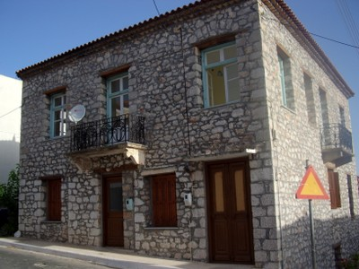
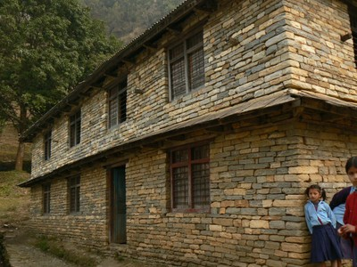
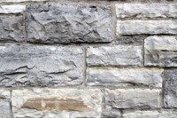
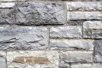
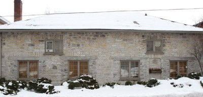
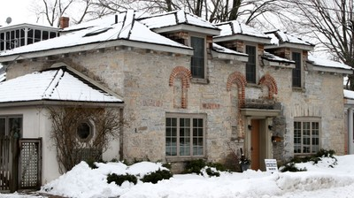
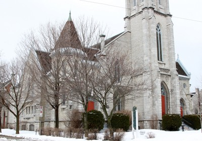
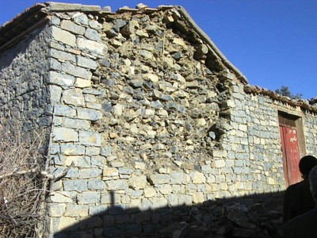
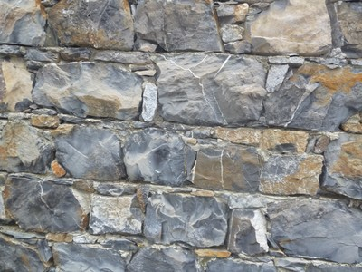

Caliza [SPLI]
La piedra caliza es una roca sedimentaria compuesta principalmente por el mineral calcita (carbonato de calcio ) . La caliza es generalmente de color blanco o gris , pero también de color marrón, amarillo, o rojo o azulado, gris o negro (debido a los óxidos de hierro o carbón ) . La mayoría de las calizas son generalmente de grano fino y sin rasgos, pero también pueden ser de grano medio a grueso , o contienen fósiles . Debido a que la calcita es una roca suave, ésta se puede rayar con el metal fácilmente. Una característica de diagnóstico de la piedra caliza es su efervescencia (burbujas) cuando está en contacto con una solución de ácido débil ( 5 %) clorhídrico.

Bloques de piedra caliza utilizados para la construcción de mampostería de piedra, Algeria (M. Farsi)

Muros de mampostería portante construidos con piedra caliza - note piedras talladas en las esquinas y dinteles de madera, Pylos, South West Peloponnese, Greece (A. Pomonis)

Construcción de paredes de piedra caliza , edificio escolar, Nepal (M. Schildkamp)
 

Mampostería de caliza, vivienda multifamiliar, Kingston, Ontario, Canada (J. Lee)

Mampostería de caliza, casa unifamiliar, Kingston, Ontario, Canada (J. Lee)

Mampostería de caliza, vivienda unifamiliar, Kingston, Ontario, Canada (J. Lee)


Construcción de mampostería de caliza, iglesia, Kingston, Ontario, Canada (J. Lee)

Muro de mampostería de caliza en Ben-Daoud dañado en el terremoto de 2010 en Algeria (M. Farsi)

Muro de mampostería de caliza en Beni-Ourtilane dañado en el terremoto de 2000 (M. Farsi)

Construcción de muro de caliza, Italia (S. Brzev)

Muros de mampostería de caliza en un edificio residencial de 6 pisos, Niza, France (S. Brzev)